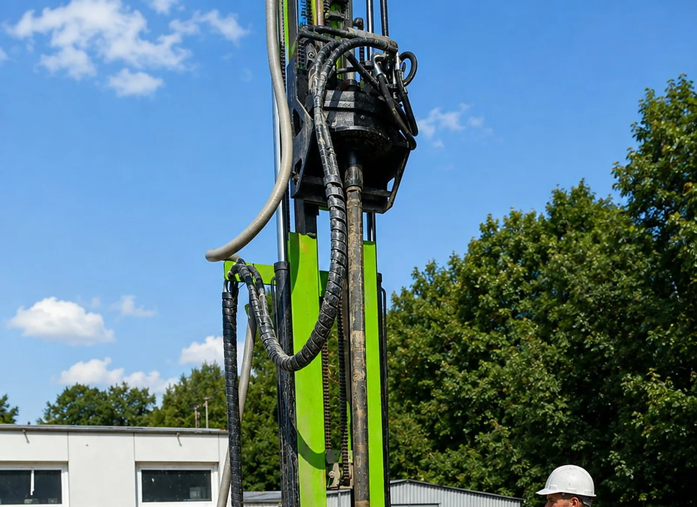
Gruntowe pompy Thermokrafft i Buderus dla domów jednorodzinnych. Większość firm zleca wiercenie podwykonawcy: czekasz w cudzej kolejce, a gdy źródło nie wyrabia, dwie firmy wskazują na siebie palcem. My wiercimy sami, więc masz jeden numer telefonu i jeden termin, wzięty z naszego grafiku.
Cztery pytania i dostajesz jedną rekomendowaną konfigurację: konkretny model pompy, dobrane dolne źródło, liczbę metrów odwiertu i szacowany koszt całości. Bez zakładania konta, bez numeru telefonu, bez „oddzwonimy".
Odpowiadamy w jeden dzień roboczy. Numeru telefonu nie musisz podawać.
Dlaczego pokazujemy cenę od razu, skoro nikt w branży tego nie robi? Bo jeśli liczby Ci nie pasują, szkoda Twojego i naszego czasu na spotkanie. A jeśli pasują — wiesz o czym rozmawiamy, zanim zadzwonisz.
Nikt uczciwy nie poda Ci rocznego rachunku, nie widząc domu. Ale każdy powinien umieć pokazać, z czego on się bierze. Tu jest cały mechanizm, w trzech liczbach, które możesz sprawdzić w każdej ofercie.
Pompa nie spala paliwa, tylko zużywa prąd na przeniesienie ciepła z gruntu do domu. Rachunek to jedno działanie:
roczne zapotrzebowanie domu w kWh
÷ sprawność sezonowa (SPF)
× cena 1 kWh prądu
= koszt ogrzewania za rok
Pierwsza liczba zależy od Twojego domu, nie od pompy. Trzecią znasz z własnej faktury. Sprzedawca ma wpływ tylko na środkową, i tam właśnie warto patrzeć na ręce.
COP to sprawność w jednym punkcie pracy, zmierzona w laboratorium. SPF to średnia za cały sezon grzewczy: ile kilowatogodzin ciepła dostajesz z jednej kilowatogodziny prądu, licząc mrozy, ciepłą wodę i wszystko, co po drodze.
W ofercie zawsze pokazują COP, bo wygląda lepiej. Rachunek liczy się z SPF. Jeśli ktoś podaje tylko COP i mówi Ci, ile zapłacisz, liczy z niewłaściwej liczby.
| Źródło danych | Pompa gruntowa | Pompa powietrzna | Różnica w zużyciu prądu |
|---|---|---|---|
| Decyzja Komisji Europejskiej 2013/114/UE — wartości przyjęte dla Polski | SPF 3,5 | SPF 2,5 | gruntowa zużywa ok. 29% mniej |
| Pomiary Fraunhofer ISE w budynkach nowych | SPF 3,9 | SPF 2,9 | gruntowa zużywa ok. 26% mniej |
Różnicę liczymy wprost z podanych SPF: przy tym samym zapotrzebowaniu domu zużycie prądu jest odwrotnie proporcjonalne do SPF. Przykład dla domu zużywającego 12 000 kWh ciepła rocznie i prądu po 1,00 zł: gruntowa przy SPF 3,5 to około 3 430 kWh i 3 430 zł, powietrzna przy SPF 2,5 to około 4 800 kWh i 4 800 zł. Podstaw swoje zapotrzebowanie i swoją cenę prądu, a dostaniesz swoją kwotę.
Nie podamy Ci okresu zwrotu inwestycji. Zależy od tego, czym grzejesz dziś, od cen prądu i paliwa przez najbliższe dwadzieścia lat i od dotacji, którą dostaniesz albo nie. Każda taka liczba na stronie wykonawcy jest zgadywaniem podanym jako obietnica.
Nie powiemy też, że pompa jest bezemisyjna. Przy obecnym polskim miksie energetycznym to około 225 g CO2 na kilowatogodzinę ciepła. Mniej niż węgiel, ale nie zero.
Najuczciwszy dowód to nie tabelka, tylko licznik w cudzym domu po pełnym sezonie. Podajemy takie odczyty z naszych instalacji, razem z metrażem domu i liczbą metrów odwiertu, żeby dało się je porównać z własną sytuacją.
Najczęstszy dramat przy gruntowej pompie: wiertacz twierdzi, że odwiert jest dobry, monter — że pompa jest dobra, a w domu zimno. U nas nie ma komu zwalać winy, bo każdy etap robi ta sama firma.
Gruntowe pompy Thermokrafft i Buderus. Części i wsparcie techniczne mamy u siebie, na miejscu — nie za granicą.
Moc liczymy z realnego zapotrzebowania budynku, a dolne źródło wymiarujemy pod geologię Twojej działki — nie z tabelki.
Wiertnica i ekipa są nasze, więc datę wiercenia ustalamy przy podpisaniu umowy, a nie po telefonie do podwykonawcy. Jeśli za rok coś jest nie tak ze źródłem, wracają ci sami ludzie, którzy je robili.
Podłączamy dolne źródło, stawiamy pompę, napełniamy, odpowietrzamy i ustawiamy parametry pod konkretny dom.
Protokół próby ciśnieniowej, dokumentacja powykonawcza i zdjęciowa, numery seryjne sond. Dowód, nie obietnica.
Po montażu nie znikamy. Za pięć lat wciąż odbierzemy telefon i przyjedziemy — do własnej instalacji, którą znamy.
Pompa nie produkuje ciepła — przenosi je z gruntu do domu. Na głębokości kilkudziesięciu metrów temperatura trzyma stałe 8–10°C przez cały rok, więc pompa nie walczy z mrozem tak jak powietrzna.
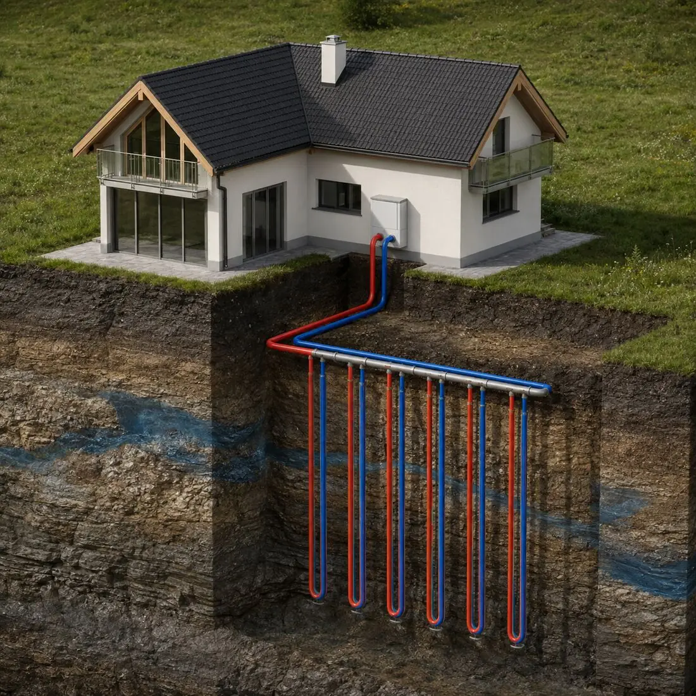
Odwierty z sondami w gruncie. To jedyna część instalacji, której nie poprawisz po wypełnieniu otworu — dlatego wymiarujemy ją z zapasem, a nie na styk.
Odbiera ciepło od glikolu i podnosi je do temperatury, jakiej potrzebuje Twoja instalacja. Cicha, bez jednostki zewnętrznej na ścianie.
Podłogówka albo powiększone grzejniki plus CWU. Latem ta sama instalacja może chłodzić dom, przy okazji doładowując grunt.
Cztery moce pokrywające dom od 60 do ponad 300 m². Sprężarka Panasonic, zawory Saginomiya, płytowy wymiennik ciepła, pięć trybów pracy: ogrzewanie, chłodzenie, ciepła woda i kombinacje.
| Model | Zakres mocy | Zasilanie | COP W10/7→W30/35 | COP W0/-3→W30/35 | EER | Cena brutto |
|---|---|---|---|---|---|---|
| TK-G2S/R290 | 2–11 kW | 230 V | 5,72 | 4,57 | 5,76 | 23 990 zł |
| TK-G3S/R290 | 4–13 kW | 230 V | 5,86 | 4,80 | 5,54 | 26 190 zł |
| TK-G5S/R290 | 6–18 kW | 230 / 400 V | 6,08 | 4,75 | 5,93 | 27 990 zł |
| TK-G6S/R290 | 10–23 kW | 230 / 400 V | 6,02 | 4,67 | 5,78 | 30 790 zł |
Montujemy również gruntowe pompy Buderus. Ceny nie ma w tabeli, bo zależy od modelu i konfiguracji, więc podajemy ją w wycenie. Dane Thermokrafft: producenta, w punktach pracy wg PN-EN 14511. W10/7 oznacza wodę gruntową 10°C na wejściu, W0/-3 — glikol 0°C, czyli warunki zimowe. Ceny brutto, sugerowane detaliczne. Wartości SCOP, klasy energetycznej, poziomu hałasu i masy nie podajemy, dopóki nie mamy ich z etykiety energetycznej producenta — nie zgadujemy parametrów.
Propan ma współczynnik GWP równy 3, wobec setek lub tysięcy dla czynników syntetycznych. Nie podlega wycofywaniu przez przepisy F-gazowe, więc nie kupujesz urządzenia z datą ważności.
R290 pozwala uzyskać wyższą temperaturę wody grzewczej niż wiele czynników alternatywnych. To ma znaczenie przy modernizacji domu z grzejnikami.
Propan jest palny, dlatego urządzenia mają ograniczoną ilość czynnika w szczelnym obiegu i wymagają zachowania zasad montażu. To robota dla instalatora z uprawnieniami — czyli dla nas.
To jest ta część instalacji, o której producenci piszą dwa akapity — bo jej nie wykonują. My robimy ją sami, więc najpierw ustalamy technologię, a dopiero potem wyceniamy.
Metodą płuczkową. Idzie w głąb, więc na powierzchni zajmuje kilka metrów kwadratowych. Da się wykonać przy gotowym domu, jeśli wiertnica ma jak wjechać. Najwyższy koszt na metr z całej czwórki.
Rura zwinięta w spiralę, opuszczona płycej niż sonda pionowa. Rozwiązanie uznane w wytycznych branżowych. Dobiera się je do konkretnych warunków gruntu — sensowny kompromis między odwiertem a kolektorem.
Kopany, układany płytko na dużej powierzchni. Najtańszy w wykonaniu, ale potrzebuje wolnego terenu i ingeruje w większy kawałek działki niż rozwiązania wiercone. Na małej działce zwykle się nie mieści.
Woda ze studni czerpalnej, zrzut do chłonnej, wymiennik pośredni chroniący instalację przed zanieczyszczeniami. Wymaga potwierdzonych, stabilnych warunków wodnych i większej liczby formalności.
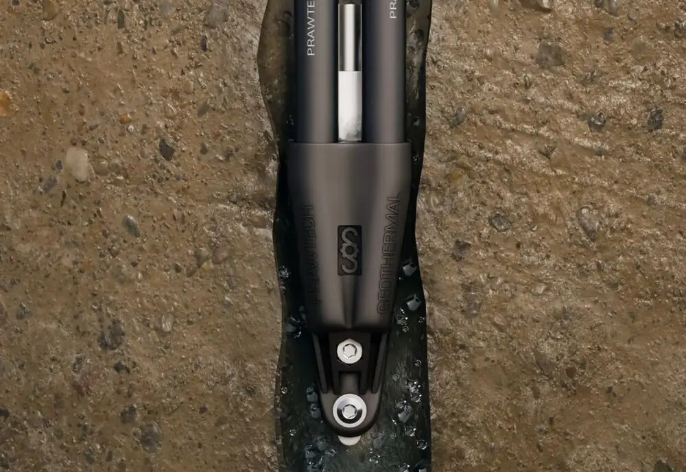
Nie z metrażu domu. Liczymy moc odbieraną z gruntu i dzielimy ją przez wydajność jednego metra odwiertu, która zależy od tego, co realnie jest pod Twoją działką. W nawodnionych piaskach z metra wyciągniemy więcej niż w suchej glinie.
Za krótkie źródło to tańsza oferta dziś i glikol schodzący z zimy na zimę coraz niżej. Badania Fraunhofer ISE wskazały niedowymiarowane dolne źródło jako najczęstszą przyczynę słabej pracy pomp — nie samo urządzenie.
To pytanie pada w każdej rozmowie, a prawie żaden wykonawca nie odpowiada na nie na stronie. Poniżej jest wszystko, łącznie z rzeczami, które wolelibyśmy przemilczeć.
Wiertnica HR-606S jest kompaktowa: potrzebuje przejazdu na działkę i placu na maszt. Sam odwiert zajmuje na powierzchni kilka metrów kwadratowych, bo idzie w głąb, nie na boki. Sprawdzamy wjazd na oględzinach, przed umową, żeby nie okazało się na miejscu, że maszyna nie ma którędy wjechać.
Wiercenie liczy się w dniach, nie w tygodniach. Ile dokładnie, zależy od liczby metrów i od tego, czy idziemy na płuczkę, czy przebijamy się młotkiem przez skałę. Termin dostajesz przy podpisaniu umowy, bo grafik jest nasz, nie podwykonawcy.
Powiemy wprost: przy wierceniu na płuczkę powstaje urobek, czyli mokra mieszanina wody i tego, co wyszło z otworu. Trzeba go gdzieś odprowadzić, a teren wokół otworu zostaje naruszony. Dlatego najlepszy moment na odwierty to etap przed kostką i trawnikiem.
Geologia bywa inna, niż zakładał projekt. Trafia się kamień, warstwa oddaje mniej ciepła, otwór trzeba pogłębić. To moment, w którym rachunek potrafi urosnąć już po podpisaniu umowy, a klient dowiaduje się o tym na końcu.
Zapytaj o to każdego wykonawcę, zanim podpiszesz. Odpowiedź powinna być w umowie, nie w rozmowie.
Pan Krecik to nasza marka wykonawcza dolnych źródeł. Wykonujemy je pod pompy Thermokrafft i Buderus, ale też pod urządzenie dowolnej marki — również dla instalatorów, którzy montują pompę u siebie.
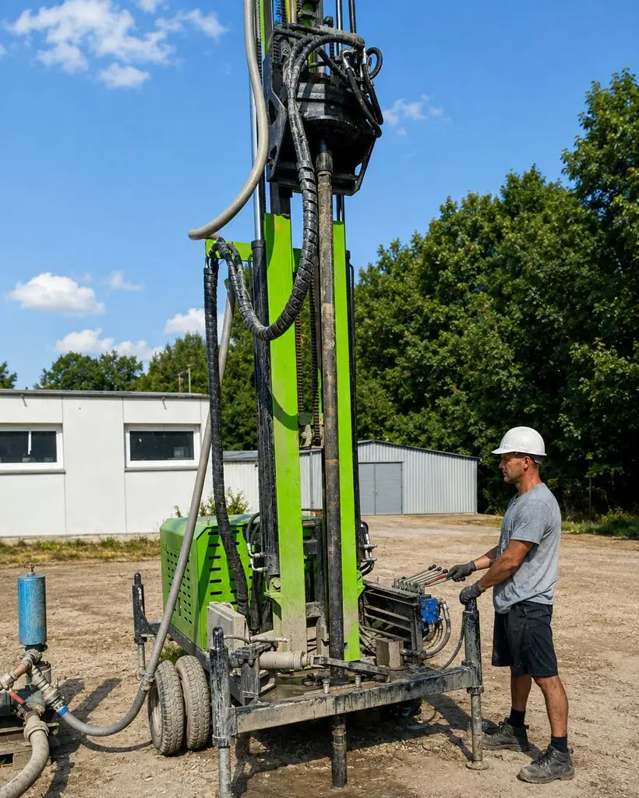
Na płuczkę — do gruntów miękkich i sypkich. Wiertło chłodzi i wypłukuje urobek woda tłoczona pod ciśnieniem.
Na młotek — do gruntów twardych i skały. Wolniej, ale przebija się tam, gdzie płuczka nie da rady.
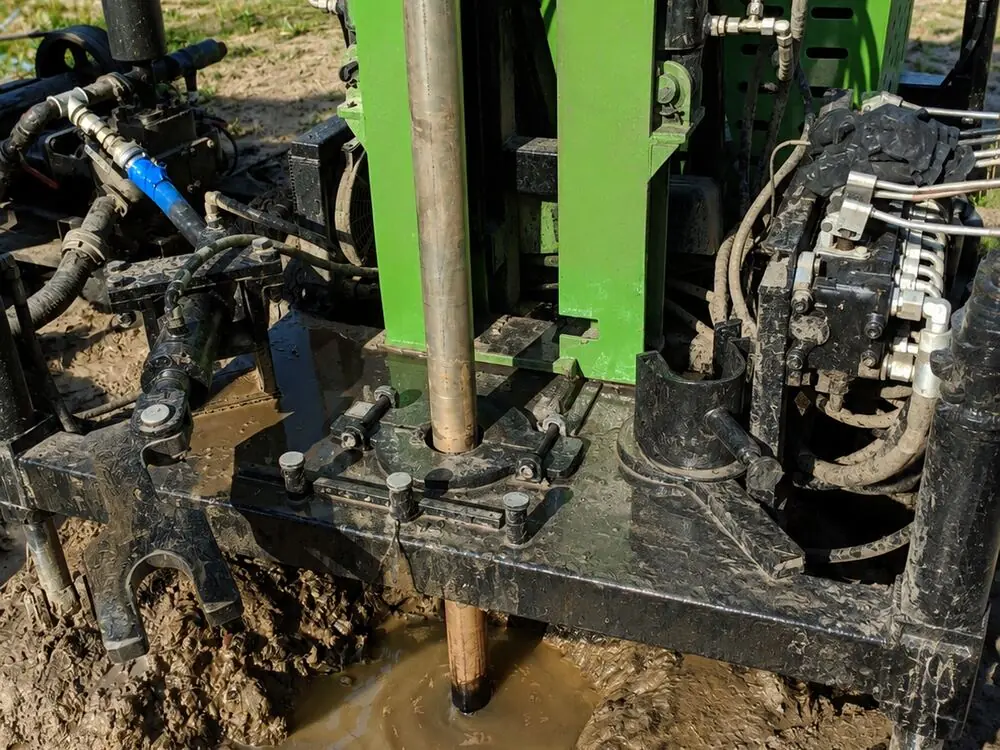
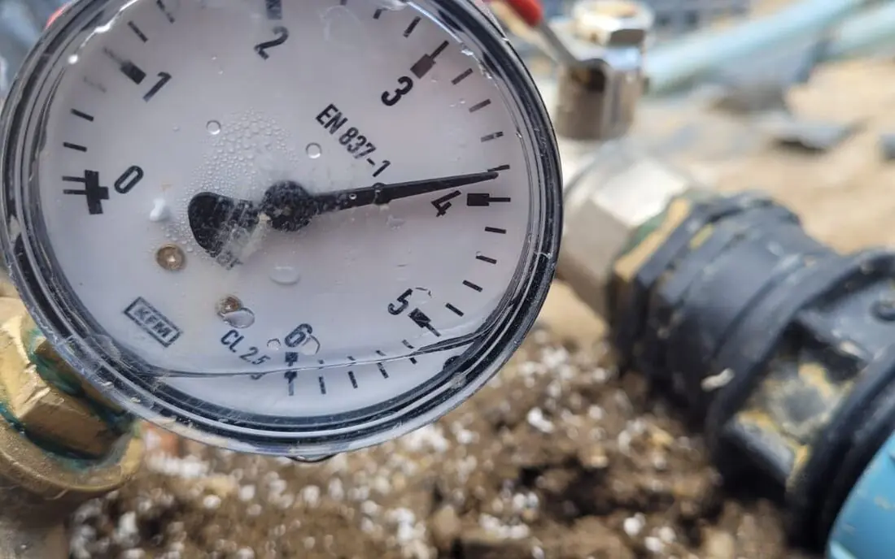
Zbudowaliśmy narzędzie, które generuje raport geologiczny dla otworu dolnego źródła na podstawie oficjalnych danych Państwowego Instytutu Geologicznego. To ono decyduje, ile metrów odwiertu naprawdę potrzebujesz — a nie metraż domu.
Raport powstaje z Centralnej Bazy Danych Geologicznych PGI-PIB, a nie z naszych przypuszczeń.
Widzisz, co jest pod działką i czego spodziewać się przy wierceniu — zanim podpiszesz jakąkolwiek umowę.
Bez logowania i bez zostawiania numeru. Możesz z niego skorzystać, nawet jeśli ostatecznie wybierzesz inną firmę.
Wolimy stracić zlecenie niż sprzedać instalację, która u Ciebie nie zagra. Gruntowa pompa to inwestycja na dwadzieścia lat — jeśli warunki są złe, przez dwadzieścia lat będziesz nas wspominał.
Pompę wymienisz w jeden dzień. Odwiertu nie. Jak go raz wypełnią, zostaje w ziemi na dziesiątki lat taki, jaki ktoś go zrobił. Zadaj te pytania każdemu, kto składa Ci ofertę — nam też.
Krótszy odwiert to tańsza oferta dziś i wychłodzone źródło za parę zim. Jeśli ktoś rzuca liczbę, nie pytając, co masz pod działką — to zgadywanie. Odwierty wiercone za blisko siebie podkradają sobie ciepło.
Sonda musi dotykać gruntu na całej długości. Zaczyn tłoczy się od dna do góry i ma mieć podaną przewodność cieplną. Piasek wsypany od góry to nie jest wypełnienie odwiertu.
Próba ciśnieniowa przed wypełnieniem otworu i protokół z niej na papierze. Bez tego kupujesz kota w worku zakopanego na kilkadziesiąt lat.
Dokumentacja powykonawcza, protokół próby i numery seryjne sond. Jedyny dowód na to, co naprawdę siedzi pod Twoim trawnikiem.
Wiertnica, otwory, sondy i kotłownie z naszych realizacji — od nowych domów po modernizacje starych piwnic.
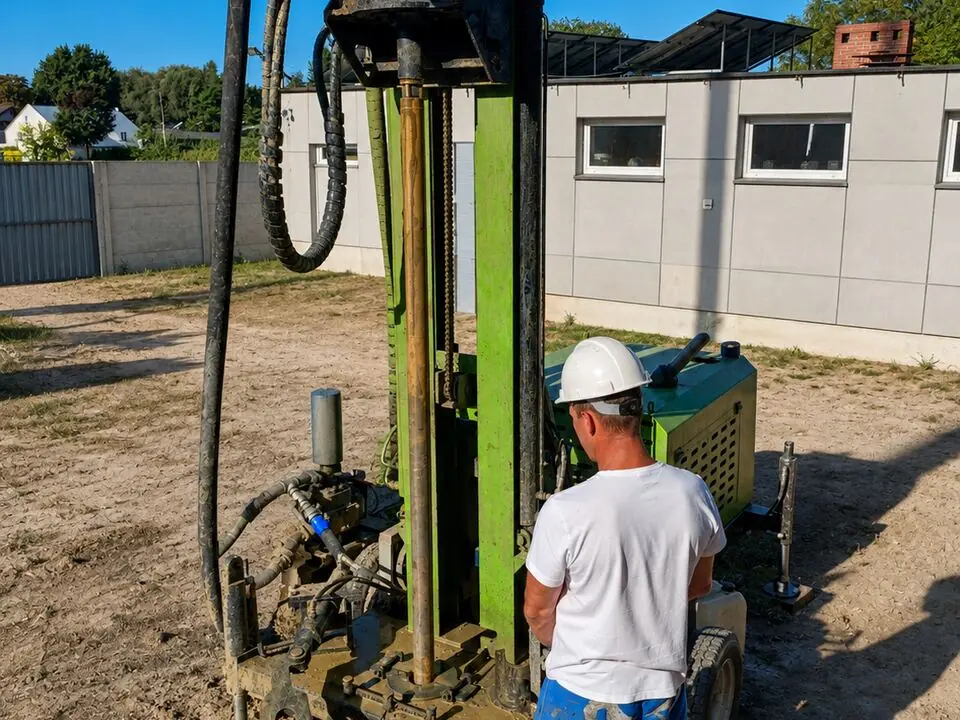
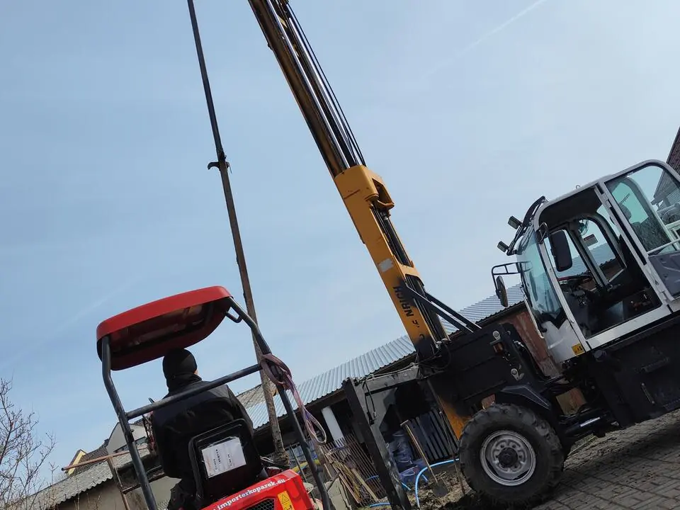
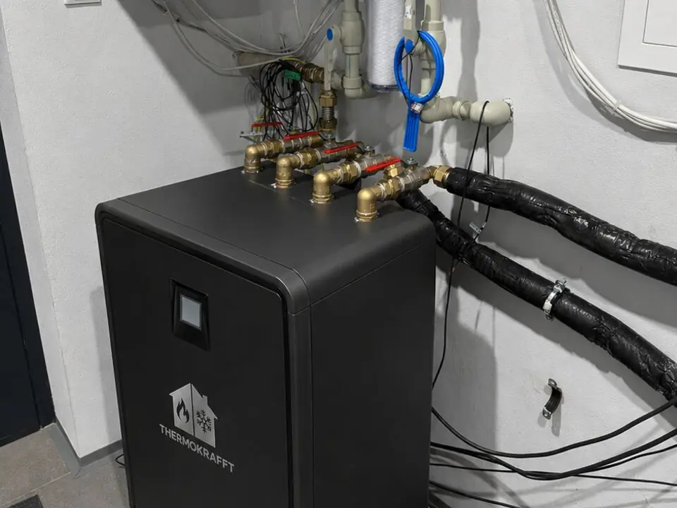
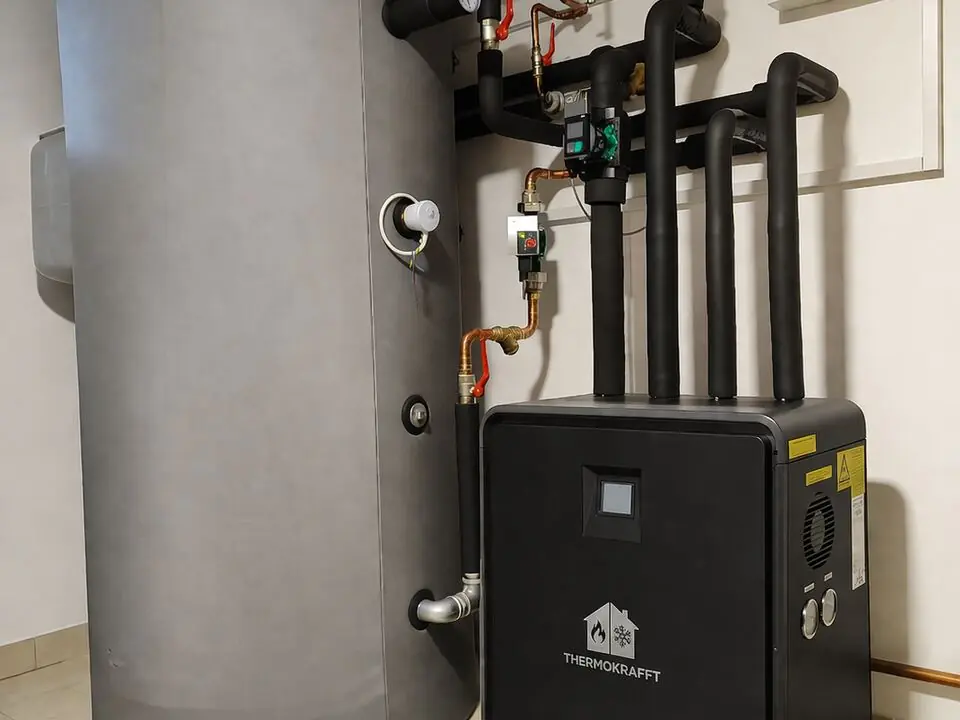
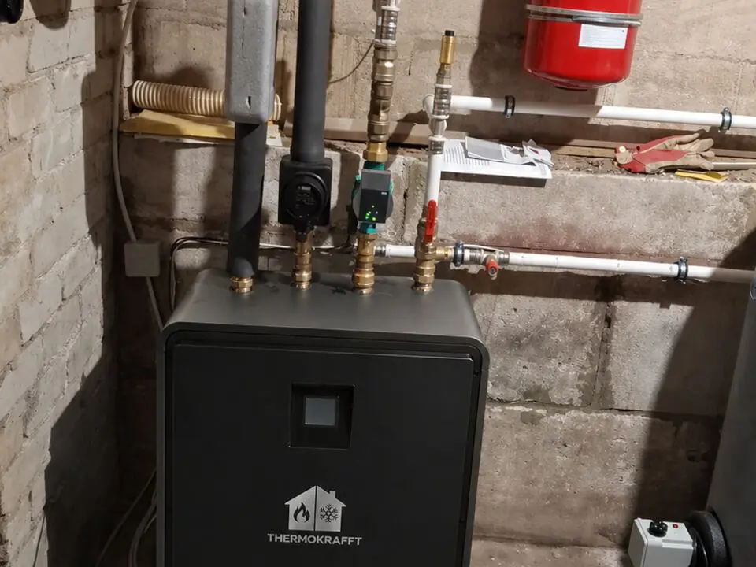
Zdjęcie pokazuje, że robota była. Liczby pokazują, czy zagrała. Dlatego przy każdej realizacji podajemy to, co pozwala porównać ją z własnym domem, łącznie ze zużyciem prądu po pełnym sezonie.
| Miejscowość | Dom | Pompa | Dolne źródło | Rok | Prąd na ogrzewanie za sezon |
|---|---|---|---|---|---|
| [DO UZUPEŁNIENIA] | [m², standard] | [model] | [ile otworów × ile metrów] | [rok] | [kWh] |
| [DO UZUPEŁNIENIA] | [m², standard] | [model] | [ile otworów × ile metrów] | [rok] | [kWh] |
| [DO UZUPEŁNIENIA] | [m², standard] | [model] | [ile otworów × ile metrów] | [rok] | [kWh] |
Na forach budowlanych radzi się to samo: poproś wykonawcę o kontakt do trzech osób z instalacją starszą niż pięć lat. Firma, która nie ma czego się bać, poda je bez wykrętów.
Ludzie dzwonią za późno i przepada im sezon albo dotacja. Budują dom, pompę zostawiają na koniec, a wtedy albo wiertnica nie ma jak wjechać, albo rury nie zdążą wejść przed wylewkami. Najdłużej trwają papiery, więc od nich liczy się cały termin.
Pytamy o dom i o ogrzewanie. Mówimy szczerze, czy gruntowa u Ciebie ma sens. Jeśli nie ma — powiemy od razu, a nie po podpisaniu umowy.
Sprawdzamy wjazd, miejsce na odwierty i trasę rur. Do tego raport geologiczny z bazy PGI-PIB, żeby wiedzieć, czego spodziewać się pod ziemią.
To etap, na którym nie mamy wpływu na zegar: czeka się na urząd. Powyżej 30 m potrzebny projekt robót geologicznych i zgłoszenie do starostwa, powyżej 100 m dochodzi nadzór górniczy. Trwa najdłużej i nie da się tego przyspieszyć.
Musi się zdarzyć, zanim położysz kostkę i trawnik. Samo wiercenie to zwykle dni, nie tygodnie.
Rury muszą wejść do domu przed wylewkami. Ustawiamy pompę pod konkretny budynek i tłumaczymy, jak z niej korzystać.
Zostajemy. Za pięć lat wciąż jesteśmy w tej samej miejscowości, z częściami i wiedzą o Twojej instalacji.
Najpierw jedno pytanie, bo od niego zależy wszystko: budujesz nowy dom czy masz już stary? Prawie każdy program dotyczy tylko jednej z tych sytuacji, a inwestorzy ciągle je mylą i tracą pieniądze.
| Program | Dla kogo | Ile | Kiedy składasz wniosek |
|---|---|---|---|
| Moje Ciepło | Tylko nowy dom, odbiór po 1 stycznia 2021 | 30% kosztów, maksymalnie 21 000 zł 45% z Kartą Dużej Rodziny |
Po zakończeniu inwestycji i odbiorze budynku |
| Czyste Powietrze | Tylko dom już istniejący, trzy poziomy według dochodu | [DO UZUPEŁNIENIA] | Przed rozpoczęciem lub w trakcie inwestycji |
| Ulga termomodernizacyjna | Tylko budynek już wybudowany, właściciel płacący PIT | do 53 000 zł odliczenia od dochodu realnie wraca 12% lub 32% tej kwoty |
W rozliczeniu rocznym PIT |
Ulga termomodernizacyjna to odliczenie od podstawy opodatkowania, a nie przelew. Odliczasz wydatek od dochodu, więc do kieszeni wraca tyle, ile wynosi Twoja stawka podatku: 12% albo 32% odliczonej kwoty. Kwoty Czystego Powietrza podamy dopiero, gdy potwierdzimy je w aktualnym Załączniku nr 2 do programu, bo źródła podają je rozbieżnie, a pomyłka w tę stronę kosztuje klienta realne pieniądze.
Nabór kończy się z końcem 2026 roku i nie ogłoszono programu, który ma po nim nastąpić.
Wniosek składa się dopiero po odbiorze budynku. Jeśli dziś budujesz, Twoim realnym terminem jest odbiór, a nie data naboru: musisz zdążyć wprowadzić się i odebrać dom, zanim okno się zamknie.
NFOŚiGW rozpatruje obecnie wnioski złożone w grudniu 2025, więc na samą decyzję też trzeba doliczyć czas.
Przygotujemy dokumenty od wykonawcy, których wymaga wniosek: fakturę z wyszczególnionymi pozycjami, protokół odbioru, dane urządzenia. Pokażemy, co gdzie złożyć i w jakiej kolejności.
Nie weźmiemy pełnomocnictwa i nie będziemy składać wniosku za Ciebie. Podpisujesz go sam, na swoje nazwisko, bo to Twoje oświadczenie wobec urzędu i Twoja odpowiedzialność za jego treść.
Trzeci strach po cenie i po rachunku: że firma weźmie pieniądze i zniknie, a Ty zostaniesz z instalacją, której nikt nie chce dotknąć. Oto co dokładnie dostajesz i kto przyjeżdża.
Trzy różne rzeczy, trzy różne okresy: urządzenie w kotłowni, szczelność sondy w gruncie i samo wykonanie odwiertu. Wykonawca, który podaje jedną liczbę na wszystko, albo upraszcza, albo nie czytał własnej umowy.
Ta sama firma, która stawiała instalację, i zwykle ci sami ludzie. Nie infolinia producenta, nie serwisant z drugiego końca Polski, który pierwszy raz widzi Twoją kotłownię. Siedzimy w Dobrzycy i stąd wyjeżdżamy.
Wsparcie techniczne i części do pomp Thermokrafft mamy na miejscu, w kraju, a nie u zagranicznego dystrybutora. To różnica między naprawą w kilka dni a czekaniem na przesyłkę zza granicy w środku mrozów.
Co się w tej instalacji faktycznie psuje: to, co pod ziemią, nie ma ruchomych części, więc awarie zdarzają się w kotłowni, w samym urządzeniu. W analizach kosztowych PORT PC przyjmuje się dla pionowego wymiennika gruntowego okres 50 lat, a dla pompy gruntowej okres użytkowania 20 lat według VDI 2067, wobec 18 lat dla powietrznej. To założenia rachunkowe do porównań, a nie gwarancja producenta.
Tyle, ile wynosi roczne zapotrzebowanie Twojego domu na ciepło podzielone przez sprawność sezonową pompy. Dla domu potrzebującego 12 000 kWh ciepła i pompy o SPF 3,5 wychodzi około 3 430 kWh prądu na sezon. Podstaw swoje liczby: cały mechanizm rozpisaliśmy w sekcji Rachunek za prąd. Uwaga na oferty, w których ktoś liczy Twój rachunek z COP zamiast z SPF — COP to pomiar z jednego punktu pracy, nie średnia z sezonu.
Stawka za metr zależy od technologii wiercenia i od tego, co jest pod działką: w gruncie miękkim idziemy na płuczkę, w skale młotkiem, a to dwie różne prędkości i dwa różne koszty. Dlatego podajemy ją w wycenie, po sprawdzeniu geologii, a nie jako jedną liczbę na stronie dla wszystkich. Zapytaj też każdego konkurenta, czy w jego stawce jest sonda, wypełnienie otworu i próba ciśnieniowa, bo najtańsza oferta za metr często ich nie zawiera.
Zależy głównie od zapotrzebowania budynku i liczby metrów odwiertu. Najszybciej sprawdzisz to w kalkulatorze wyżej — poda konkretny model, liczbę metrów i szacowany koszt całości z rozbiciem na pompę, dolne źródło i montaż. Dokładną kwotę podajemy po obejrzeniu działki, bo geologia potrafi zmienić długość odwiertu.
Nie, bo to nie zbiornik, który się opróżnia. Zimą grunt oddaje ciepło, latem regeneruje się sam, a jeśli chłodzisz dom przez sondy, doładowujesz go dodatkowo. Ale przeciążyć go można: za mało odwiertów do zbyt dużej pompy i glikol z zimy na zimę schodzi coraz niżej. Winna nie technologia, tylko za oszczędny projekt.
Zależy, jak gorącą wodę musi przygotować pompa. Każdy stopień w górę to około dwóch procent sprawności w dół. Policzymy Twoje grzejniki — jeśli po powiększeniu kilku zejdziesz do 45°C, da się zrobić dobrą instalację. Jeśli wyjdzie 55°C i więcej, powiemy, żebyś odpuścił, zamiast brać Twoje pieniądze.
Moje Ciepło: 30% kosztów kwalifikowanych, maksymalnie 21 000 zł, a z Kartą Dużej Rodziny 45%. Warunek jest twardy: dom musi być nowy, z odbiorem po 1 stycznia 2021, a wniosek składasz dopiero po zakończeniu inwestycji. Jeśli masz dom istniejący, ten program Cię nie dotyczy i szukasz Czystego Powietrza albo ulgi termomodernizacyjnej. Nabór Moje Ciepło kończy się 31 grudnia 2026 i nie ogłoszono następcy, więc jeśli budujesz, licz termin od odbioru budynku, nie od daty naboru.
Do 30 m zwykle bez formalności geologicznych, poza terenami górniczymi. Powyżej 30 m potrzebny jest projekt robót geologicznych i zgłoszenie do starostwa. Powyżej 100 m dochodzi plan ruchu pod nadzorem górniczym. Dokumenty przygotowujemy my, Ty je podpisujesz.
Wiertnica potrzebuje przejazdu i miejsca na maszt, a przy wierceniu na płuczkę powstaje urobek, który trzeba gdzieś odprowadzić. Teren wokół odwiertu zostaje naruszony i trzeba go potem uporządkować. Dlatego najlepszy moment na odwierty to etap przed kostką i trawnikiem — mówimy to każdemu, kto dzwoni za późno.
To, co jest w ziemi — odwierty i sondy — nie ma ruchomych części. Po latach wymienia się samo urządzenie w kotłowni. W analizach branżowych przyjmuje się trwałość pompy rzędu dwudziestu lat, a pionowego wymiennika gruntowego znacznie dłużej. To założenia rachunkowe, nie gwarancja producenta — ale pokazują, gdzie leży wartość: pompa to sprzęt na lata, odwiert na pokolenie.
Bo to zależy od tego, co jest dla Ciebie ważne. Powietrzna jest tańsza na start i szybsza w montażu. Gruntowa pracuje na stabilnym źródle, więc w mróz nie traci sprawności tak jak powietrzna, jest cicha, nie ma jednostki na ścianie i potrafi chłodzić latem. Jeśli liczy się dla Ciebie wyłącznie koszt początkowy — powiemy wprost, że powietrzna będzie uczciwszym wyborem.
Siedziba jest w Dobrzycy. Pracujemy w województwach wielkopolskim, łódzkim, kujawsko-pomorskim, dolnośląskim, śląskim i mazowieckim. Blisko granicy regionu? Zapytaj, sprawdzimy.
Montujesz pompy i szukasz kogoś do dolnego źródła? Robimy odwierty, sondy HELIX, kolektory i układy woda-woda pod urządzenie dowolnej marki. Ty odpowiadasz za kotłownię, my za to, co pod ziemią — z protokołem i dokumentacją powykonawczą.
Nawiąż współpracę → Kreator ofertowy (kod dostępu)Narzędzie do wystawiania ofert i umów dla partnerów — dobór, kosztorys, PDF.
Raport geologiczny z bazy PGI-PIB dla otworu, który planujesz.
Dolne źródło pod pompę dowolnej marki — Thermokrafft, Buderus i inne.
Thermokrafft i Buderus — warunki partnerskie do ustalenia.
Napisz, co budujesz albo modernizujesz. Z tego, co podasz, przygotujemy widełki ceny i wstępną liczbę metrów odwiertu. Dokładny projekt dopiero po obejrzeniu działki — nie będziemy udawać, że da się go wyssać z formularza.